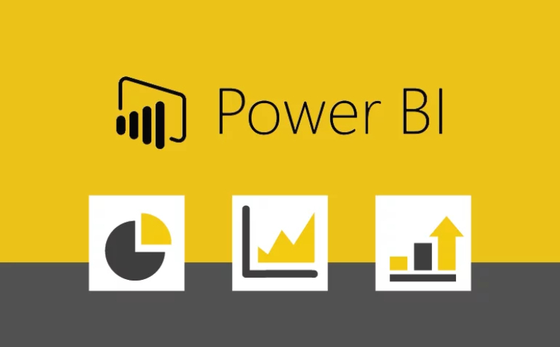

Визуализация данных и создание отчетов - это моя работа и страсть. Мне всегда нравится иметь ясную картину, когда принимаю решения в своей жизни.
Поэтому, я применяю тот же самый принцип в своих отчетах.
Все датасеты, которые я использовал, были загружены с сайта Kaggle и находятся в открытом доступе. Каждый датасет был сначала очищен в Power Query по мере необходимости, а затем загружен в Power BI.
Я создал отчеты по акциям Apple, Airbnb в Нью-Йорке, анализу рыночных кампаний, продажам продуктов и т.д. Вы можете ознакомиться со всеми отчетами, нажав на изображение или ссылку ниже.

В этом проекте я проанализировал тестовые оценки студентов с помощью библиотеки Pandas. Был проведен эксплораторный анализ данных и определены некоторые выводы.
Проект был выполнен на базе данных Олимпиады. Были даны ответы на все 20 интересных вопросов об истории Олимпийских игр, а результаты интерпретированы в Power BI.
Интересный проект по анализу поведения клиентов в телекоммуникационной компании. Я выяснил, какие клиенты более склонны к оттоку. Это было частью курса DataQuest.
Анализ проводился на языке SQL, а результаты запросов интерпретировались в Power BI с использованием набора данных Covid по состоянию на 16 февраля 2023 года.
В этом проекте я проанализировал тестовые оценки студентов с помощью библиотеки Pandas. Был проведен эксплораторный анализ данных и определены некоторые выводы.

Анализ акций Microsoft был полностью выполнен в MS Excel с использованием продвинутых инструментов анализа данных. Проект был частью курса DataQuest.
Анализ проводился с использованием всех типов SQL-запросов. Я показал, какие страны являются самыми высокими производителями и потребителями. Результаты показаны в Power BI.
Проект был частью курса DataQuest "Введение в программирование на Python". Это был мой первый набор для анализа на Python с использованием Pandas.